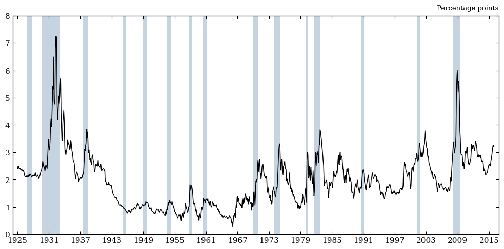
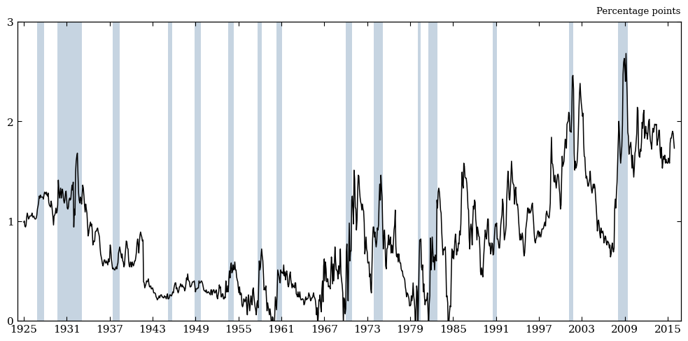
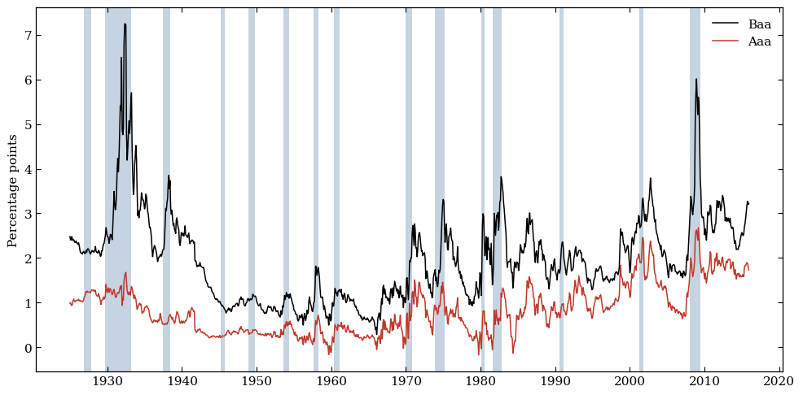
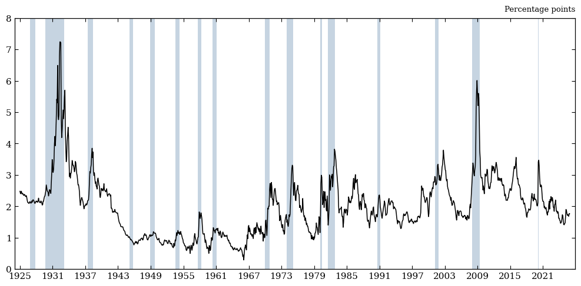
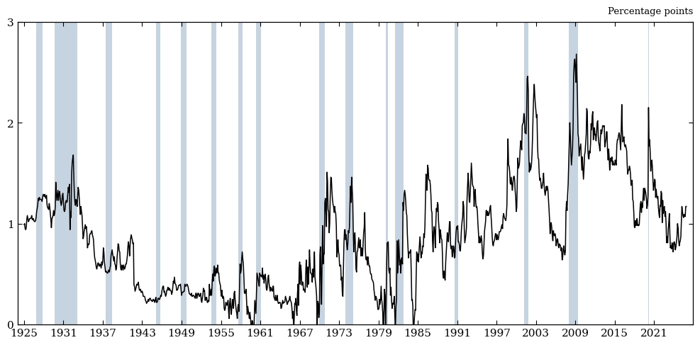
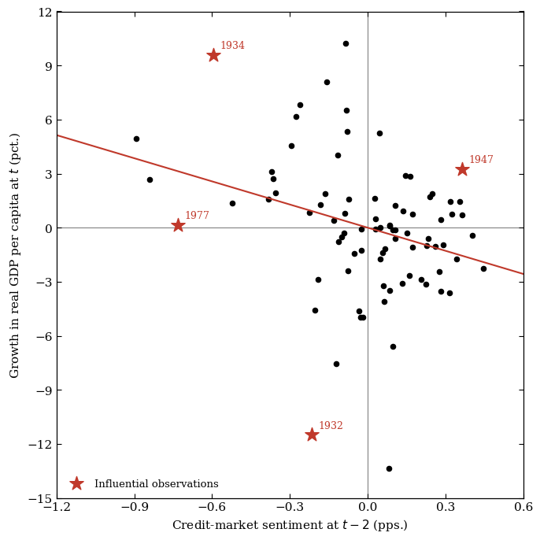
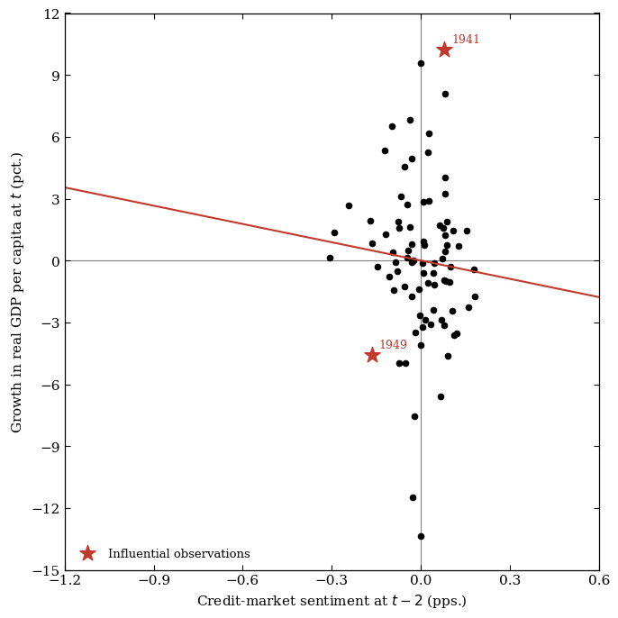

Lopez-Salido, Stein & Zakrajšek (2017): Aaa-Spread Extension#
Introduction#
02_replication.ipynb asked whether our code reproduces Lopez-Salido, Stein
& Zakrajšek (2017, “LSZ”) and whether their result holds up on more recent
data. This notebook asks a different question: does the paper’s specific
choice of credit spread matter?
LSZ build their credit-market-sentiment measure from the spread between Baa-rated corporate bonds and the 10-year Treasury. Baa is the lowest investment-grade rating - one downgrade away from “junk.” That is not an arbitrary choice. The paper’s whole mechanism is about reach-for-yield behavior: investors bidding up prices (narrowing spreads) on the riskiest bonds that are still investment grade, and that optimism unwinding two years later. If that story is right, a spread built from Aaa-rated bonds (the highest and safest investment-grade tier, economically much closer to a riskless Treasury than to a junk bond) should carry much less of that signal. Aaa issuers are about as far from the reach-for-yield segment of the market as a corporate borrower can be.
This notebook rebuilds every exhibit from 02_replication.ipynb, holding
every other part of the construction fixed (same data windows, same
controls, same methodology) and swapping only BAA_Treasury_spread for
AAA_Treasury_spread. This is exactly what the spread_col argument in
every replicate_*.py module is for. The question we’re really asking:
does the paper’s identification survive using a spread that carries much
less credit-risk information, or does it need Baa specifically?
Comparison#
Every exhibit below is shown Baa vs. Aaa, side by side, for both the
1929-2015 replication window and the 1929-2025 extended window — the
opposite framing from 02_replication.ipynb, which fixed the spread (Baa)
and compared windows.
Setup#
Same four replicate_* modules as 02_replication.ipynb. Every one of
their build_panel / plot_figure_* functions takes a spread_col
argument - that’s the whole mechanism this notebook exercises.
import sys
from pathlib import Path
import matplotlib.pyplot as plt
import pandas as pd
from IPython.display import Markdown, display
sys.path.insert(0, str(Path.cwd().parent / "src"))
import replicate_figure_1 as f1
import replicate_figure_2 as f2
import replicate_table_1 as t1
import replicate_table_2 as t2
from plot_style import (
RECESSION_COLOR,
recession_spans,
set_paper_style,
style_axes,
)
from settings import config
PROCESSED_DATA_DIR = Path(config("PROCESSED_DATA_DIR"))
OUTPUT_DIR = Path(config("OUTPUT_DIR"))
REP_START, REP_END, EXT_END = t1.REP_START, t1.REP_END, t1.EXT_END
BAA, AAA = "BAA_Treasury_spread", "AAA_Treasury_spread"
print(
f"Replication window: {REP_START}-{REP_END} \nExtended window: {REP_START}-{EXT_END}"
)
def show_tex(path):
"""The raw LaTeX `emit`/`emit_table_2` write to `_output/` -- exactly
what feeds `reports/report.tex` -- as a syntax-highlighted, collapsed-
by-default code block, so it's available without competing with the
rendered table displayed above it."""
display(
Markdown(
f"<details><summary>Raw LaTeX written to <code>{path.name}</code></summary>\n\n"
f"```latex\n{path.read_text()}\n```\n</details>"
)
)
Replication window: 1929-2015
Extended window: 1929-2025
A first, purely descriptive look at the two spreads sets up everything that follows: same underlying market (corporate bonds vs. Treasuries), very different behavior.
monthly = pd.read_parquet(PROCESSED_DATA_DIR / "fred_final_series_monthly.parquet")
window = monthly.loc[(monthly.index >= f1.BUFFER_START) & (monthly.index <= f1.REP_END)]
baa_level, aaa_level = window[BAA].dropna(), window[AAA].dropna()
stats = pd.DataFrame({"Baa": baa_level.describe(), "Aaa": aaa_level.describe()})
stats.style.format("{:.2f}")
print(f"Correlation of levels: {baa_level.corr(aaa_level):.2f}")
print(f"Correlation of monthly changes: {baa_level.diff().corr(aaa_level.diff()):.2f}")
Correlation of levels: 0.74
Correlation of monthly changes: 0.69
Aaa runs at roughly 42% of Baa’s average level (0.84pp vs. 1.97pp) and about 55% of its volatility (std. 0.54 vs. 0.99). Aaa corporate yields also occasionally dip just below the 10-year Treasury yield, a well-known quirk that simply cannot happen to Baa. The two series are correlated (0.74 in levels, 0.69 in monthly changes) but far from identical. That gap is the whole story this notebook investigates.
Figure I: Baa vs. Aaa Credit Spread#
replicate_figure_1.plot_figure_1 takes a spread_col argument specifically
so it can render either spread; replicate_figure_1.SPREAD_VARIANTS is the
(label, column) list main() loops over to emit both figure_1_*.pdf and
figure_1_aaa_*.pdf. We call it directly on both columns.
fig_baa, spread_baa = f1.plot_figure_1(
monthly, f1.BUFFER_START, f1.REP_END, spread_col=BAA
)
print("Baa-Treasury spread")
plt.show()
fig_aaa, spread_aaa = f1.plot_figure_1(
monthly, f1.BUFFER_START, f1.REP_END, spread_col=AAA
)
print("AAA-Treasury spread")
plt.show()
Baa-Treasury spread

AAA-Treasury spread

Two things jump out immediately. First, the y-axis itself is different -
plot_figure_1 scales its ticks to the data, and Aaa’s own maximum (2.68pp)
is barely a third of Baa’s (7.24pp), so matplotlib draws a 0-3pp axis for
Aaa against Baa’s 0-8pp. Second, and more importantly, the depression
barely shows up in Aaa: where Baa spiked past 7pp in 1932-33, Aaa peaks at
just 1.7pp over the same months. Aaa bondholders were largely insulated from
the credit panic that Baa investors lived through.
Beyond the Depression, the Aaa’s shape is qualitatively different from Baa’s, not just smaller. It shows a slow, decades-long structural climb from the 1960s trough (near 0.2pp) up to a local peak around 2000-03 and again 2008-09 (~2.4-2.7pp) that looks much more like a slow-moving trend than a series of sharp business-cycle spikes, and it sits at or near zero for extended stretches (the early 1960s, the late 1970s) where Baa never comes close to zero. A direct overlay makes both the amplitude gap and the shape difference easy to see side by side:
set_paper_style()
fig, ax = plt.subplots(figsize=(10, 5))
ax.plot(spread_baa.index, spread_baa.values, color="black", lw=1.1, label="Baa")
ax.plot(spread_aaa.index, spread_aaa.values, color="#c0392b", lw=1.1, label="Aaa")
for s, e in recession_spans(window):
ax.axvspan(s, e, color=RECESSION_COLOR, lw=0)
ax.set_ylabel("Percentage points")
ax.legend(loc="upper right", frameon=False)
style_axes(ax)
fig.tight_layout()
plt.show()

Extended Window#
Pushing both spreads through 2025 continues to show the difference in the magnitude of the spread.
fig_baa_e, spread_baa_e = f1.plot_figure_1(
monthly, f1.BUFFER_START, f1.EXT_END, spread_col=BAA
)
print("Baa-Treasury spread")
plt.show()
fig_aaa_e, spread_aaa_e = f1.plot_figure_1(
monthly, f1.BUFFER_START, f1.EXT_END, spread_col=AAA
)
print("AAA-Treasury spread")
plt.show()
Baa-Treasury spread

AAA-Treasury spread

Table I: Baa vs. Aaa as Growth Predictors#
Definitions#
Code column |
Paper symbol |
Definition |
|---|---|---|
|
\(\Delta y_t\) |
Log-difference of real GDP per capita, year \(t-1\) to \(t\) |
|
\(\Delta s_{t-1}\) |
Change in the credit spread over year \(t-1\) — Baa-Treasury in |
|
\(r_{t-1}^{SP}\) |
S&P 500 total (price + dividend) log return over year \(t-1\) (identical in both panels) |
|
\(\Delta y_{t-1}\) |
Lagged control: real GDP-per-capita growth over year \(t-1\) |
|
\(\Delta i_{t-1}^{(3m)}\) |
Change in the 3-month Treasury yield over year \(t-1\) |
|
\(\Delta i_{t-1}^{(10y)}\) |
Change in the 10-year Treasury yield over year \(t-1\) |
|
\(\pi_{t-1}\) |
CPI inflation rate over year \(t-1\) |
The only thing that differs between the df1_baa and df1_aaa columns above is which spread feeds d_credit_spread; every other column is built identically. See 02_replication.ipynb’s Table I section for the full raw statsmodels output these names come from.
Regressions#
replicate_table_1.build_panel takes the same spread_col argument, so we
build two panels - identical in every other column - and run identical
regressions on each. We show each panel’s full Table I, rendered, before
condensing both into a compact Baa-vs-Aaa comparison of the headline
coefficients.
df1_baa = t1.build_panel(spread_col=BAA)
df1_aaa = t1.build_panel(spread_col=AAA)
t1.emit(df1_baa, REP_START, REP_END, "replication", spread_col=BAA)
t1.emit(df1_aaa, REP_START, REP_END, "aaa_replication", spread_col=AAA)
display(t1.pretty_table_1(df1_baa, REP_START, REP_END, spread_col=BAA))
display(t1.pretty_table_1(df1_aaa, REP_START, REP_END, spread_col=AAA))
specs_t1 = {
"(1)": ["d_credit_spread", "gdp_pc_growth"],
"(2)": ["sp_return", "gdp_pc_growth"],
"(3)": [
"d_credit_spread",
"sp_return",
"d_treasury_3mo",
"d_treasury_10yr",
"CPI_inflation",
"gdp_pc_growth",
],
}
def table1_comparison(start, end):
rows, index = [], []
for col, regs in specs_t1.items():
r_baa = t1.run_regression(df1_baa, regs, start, end)
r_aaa = t1.run_regression(df1_aaa, regs, start, end)
for var, label in [
("d_credit_spread", "Δs<sub>t−1</sub>"),
("sp_return", "r<sup>SP</sup><sub>t−1</sub>"),
]:
if var not in regs:
continue
rows.append(
{
"Baa coef.": r_baa.params[var],
"Baa se": r_baa.bse[var],
"Baa Adj. R²": r_baa.rsquared_adj,
"Aaa coef.": r_aaa.params[var],
"Aaa se": r_aaa.bse[var],
"Aaa Adj. R²": r_aaa.rsquared_adj,
}
)
index.append(f"column {col} {label}")
return pd.DataFrame(rows, index=index)
replication: col1 d_s=-1.958, col2 r_sp=0.075, col3 d_s=-2.124/r_sp=0.022 -> table_1_replication.tex
aaa_replication: col1 d_s=-1.958, col2 r_sp=0.075, col3 d_s=-3.192/r_sp=0.056 -> table_1_aaa_replication.tex
| Dependent variable: Δyt | |||
|---|---|---|---|
| (1) | (2) | (3) | |
| Δst−1 | -1.958*** | --- | -2.124*** |
| (0.585) | (0.578) | ||
| rSPt | --- | 0.075** | 0.022 |
| (0.033) | (0.035) | ||
| Δyt−1 | 0.476*** | 0.478*** | 0.464*** |
| (0.104) | (0.136) | (0.114) | |
| Δit−1(3m) | --- | --- | -0.248 |
| (0.290) | |||
| Δit−1(10y) | --- | --- | -0.814** |
| (0.360) | |||
| πt−1 | --- | --- | 0.095 |
| (0.076) | |||
| Adj. R² | 0.426 | 0.381 | 0.453 |
| Standardized effect on Δyt | |||
| Δst−1 | -0.365 | --- | -0.396 |
| rSPt | --- | 0.299 | 0.087 |
| Dependent variable: Δyt | |||
|---|---|---|---|
| (1) | (2) | (3) | |
| Δst−1 | -1.958*** | --- | -3.192*** |
| (0.734) | (1.168) | ||
| rSPt | --- | 0.075** | 0.056 |
| (0.033) | (0.035) | ||
| Δyt−1 | 0.517*** | 0.478*** | 0.477*** |
| (0.109) | (0.136) | (0.121) | |
| Δit−1(3m) | --- | --- | -0.326 |
| (0.314) | |||
| Δit−1(10y) | --- | --- | -0.917* |
| (0.504) | |||
| πt−1 | --- | --- | 0.102 |
| (0.108) | |||
| Adj. R² | 0.321 | 0.381 | 0.396 |
| Standardized effect on Δyt | |||
| Δst−1 | -0.165 | --- | -0.269 |
| rSPt | --- | 0.299 | 0.225 |
cmp_t1_rep = table1_comparison(REP_START, REP_END)
cmp_t1_rep.style.format("{:.3f}")
| Baa coef. | Baa se | Baa Adj. R² | Aaa coef. | Aaa se | Aaa Adj. R² | |
|---|---|---|---|---|---|---|
| column (1) Δst−1 | -1.958 | 0.585 | 0.426 | -1.958 | 0.734 | 0.321 |
| column (2) rSPt−1 | 0.075 | 0.033 | 0.381 | 0.075 | 0.033 | 0.381 |
| column (3) Δst−1 | -2.124 | 0.578 | 0.453 | -3.192 | 1.168 | 0.396 |
| column (3) rSPt−1 | 0.022 | 0.035 | 0.453 | 0.056 | 0.035 | 0.396 |
Two patterns are worth noting:
Column (1)’s point estimates are a near-coincidence. The univariate credit-spread coefficient is essentially identical for Baa and Aaa (-1.958 either way). The standard error gives it away: 0.585 for Baa vs. 0.734 for Aaa, and the adjusted \(R^2\) (not shown in the coefficient table above but computed the same way
emitdoes) drops from 0.426 to 0.321 for the Aaa spread. The Aaa spread has the same slope, but a weaker fit.Column (3) flips the pattern. With equity returns and macro controls in the regression too, Aaa’s credit coefficient is larger in magnitude than Baa’s (-3.192 vs. -2.124) but far less precisely estimated (standard error of 1.168 vs. 0.578). It is also important to note that Aaa’s equity-return coefficient stays bigger (0.056 vs. Baa’s 0.022) than with Baa in the regression. With Baa, the equity coefficient becomes almost unnecessary; however, with Aaa, equity retains more of its own independent explanatory power. Aaa’s credit spread is doing less of the job that Baa’s does.
The paper’s own “standardized effect” row - the coefficient rescaled by StdDev(regressor)/StdDev(\(\Delta y\)) is the cleanest single number for comparing economic size across spreads with very different volatilities:
def standardized_row(df, start, end, specs, var, col):
window_df = df.loc[start:end]
res = t1.run_regression(df, specs[col], start, end)
return float(t1.standardized_effect(res, window_df, specs[col], var))
for label, start, end in [
("Replication (1929-2015)", REP_START, REP_END),
("Extended (1929-2025)", REP_START, EXT_END),
]:
print(label)
for col, var, tag in [
("(1)", "d_credit_spread", "column 1 spread"),
("(3)", "d_credit_spread", "column 2 spread"),
("(3)", "sp_return", "column 3 equity"),
]:
baa_eff = standardized_row(df1_baa, start, end, specs_t1, var, col)
aaa_eff = standardized_row(df1_aaa, start, end, specs_t1, var, col)
print(f" {tag:12s}: Baa={baa_eff:+.3f} Aaa={aaa_eff:+.3f}")
Replication (1929-2015)
column 1 spread: Baa=-0.365 Aaa=-0.165
column 2 spread: Baa=-0.396 Aaa=-0.269
column 3 equity: Baa=+0.087 Aaa=+0.225
Extended (1929-2025)
column 1 spread: Baa=-0.350 Aaa=-0.154
column 2 spread: Baa=-0.380 Aaa=-0.248
column 3 equity: Baa=+0.068 Aaa=+0.206
Once we standardize for each spread’s own volatility, the ranking becomes clear: Baa’s credit-spread is economically bigger than Aaa’s in every variation of the regression.
Extended Window#
The same comparison through 2025 tells the same story, only slightly
attenuated for both spreads (consistent with the mild attenuation
02_replication.ipynb found for Baa alone):
t1.emit(df1_baa, REP_START, EXT_END, "extended", spread_col=BAA)
t1.emit(df1_aaa, REP_START, EXT_END, "aaa_extended", spread_col=AAA)
display(t1.pretty_table_1(df1_baa, REP_START, EXT_END, spread_col=BAA))
display(t1.pretty_table_1(df1_aaa, REP_START, EXT_END, spread_col=AAA))
extended: col1 d_s=-1.871, col2 r_sp=0.069, col3 d_s=-2.033/r_sp=0.017 -> table_1_extended.tex
aaa_extended: col1 d_s=-1.812, col2 r_sp=0.069, col3 d_s=-2.926/r_sp=0.050 -> table_1_aaa_extended.tex
| Dependent variable: Δyt | |||
|---|---|---|---|
| (1) | (2) | (3) | |
| Δst−1 | -1.871*** | --- | -2.033*** |
| (0.566) | (0.571) | ||
| rSPt | --- | 0.069** | 0.017 |
| (0.032) | (0.034) | ||
| Δyt−1 | 0.461*** | 0.465*** | 0.449*** |
| (0.108) | (0.136) | (0.116) | |
| Δit−1(3m) | --- | --- | -0.170 |
| (0.265) | |||
| Δit−1(10y) | --- | --- | -0.776** |
| (0.358) | |||
| πt−1 | --- | --- | 0.089 |
| (0.078) | |||
| Adj. R² | 0.395 | 0.352 | 0.415 |
| Standardized effect on Δyt | |||
| Δst−1 | -0.350 | --- | -0.380 |
| rSPt | --- | 0.283 | 0.068 |
| Dependent variable: Δyt | |||
|---|---|---|---|
| (1) | (2) | (3) | |
| Δst−1 | -1.812** | --- | -2.926** |
| (0.713) | (1.142) | ||
| rSPt | --- | 0.069** | 0.050 |
| (0.032) | (0.034) | ||
| Δyt−1 | 0.500*** | 0.465*** | 0.463*** |
| (0.112) | (0.136) | (0.124) | |
| Δit−1(3m) | --- | --- | -0.246 |
| (0.285) | |||
| Δit−1(10y) | --- | --- | -0.829* |
| (0.478) | |||
| πt−1 | --- | --- | 0.092 |
| (0.108) | |||
| Adj. R² | 0.298 | 0.352 | 0.360 |
| Standardized effect on Δyt | |||
| Δst−1 | -0.154 | --- | -0.248 |
| rSPt | --- | 0.283 | 0.206 |
cmp_t1_ext = table1_comparison(REP_START, EXT_END)
cmp_t1_ext.style.format("{:.3f}")
| Baa coef. | Baa se | Baa Adj. R² | Aaa coef. | Aaa se | Aaa Adj. R² | |
|---|---|---|---|---|---|---|
| column (1) Δst−1 | -1.871 | 0.566 | 0.395 | -1.812 | 0.713 | 0.298 |
| column (2) rSPt−1 | 0.069 | 0.032 | 0.352 | 0.069 | 0.032 | 0.352 |
| column (3) Δst−1 | -2.033 | 0.571 | 0.415 | -2.926 | 1.142 | 0.360 |
| column (3) rSPt−1 | 0.017 | 0.034 | 0.415 | 0.050 | 0.034 | 0.360 |
Table II: Baa vs. Aaa Credit-Sentiment Regression#
Definitions#
Second-step (growth) regression - dependent variable dy (\(\Delta y_t\)):
Code column |
Paper symbol |
Definition |
|---|---|---|
|
\(\Delta \hat s_t\) |
Fitted change in the credit spread in year \(t\) — Baa or Aaa depending on the panel — from the auxiliary spread regression below |
|
\(\hat r_t^{SP}\) |
Fitted S&P 500 return in year \(t\) (identical for both panels, since it never touches the credit spread — see the note above on why column (2) is left out of the comparison) |
|
\(\Delta y_{t-1}\) |
Lagged real GDP-per-capita growth |
|
\(\Delta i_{t-1}^{(3m)}\) |
Lagged change in the 3-month Treasury yield |
|
\(\Delta i_{t-1}^{(10y)}\) |
Lagged change in the 10-year Treasury yield |
|
\(\pi_{t-1}\) |
Lagged CPI inflation rate |
Auxiliary (first-step) regressions:
Code column |
Paper symbol |
Definition |
|---|---|---|
|
\(\Delta s_t\) |
Realized change in the credit spread in year \(t\) — Baa or Aaa depending on the panel |
|
\(\ln \mathrm{HYS}_{t-2}\) |
Log of the high-yield share of bond issuance, two years earlier (same series for both panels) |
|
\(s_{t-2}\) |
Level of the credit spread, two years earlier — Baa or Aaa depending on the panel |
|
\(r_t^{SP}\) |
Realized S&P 500 total log return in year \(t\) |
|
\(\ln[P/E10]_{t-2}\) |
Log of Shiller’s cyclically adjusted P/E ratio, two years earlier |
See 02_replication.ipynb’s Table II section for the full two-step derivation; the only thing that changes here is which spread column feeds d_spread/spread_lag2/d_s_hat.
Regressions#
This is the paper’s central mechanism, so it’s the sharpest test of the
Baa-vs-Aaa question. Recall the two-step construction from
02_replication.ipynb: an auxiliary regression forecasts \(\Delta s_t\) from
\(\ln \mathrm{HYS}_{t-2}\) (the high-yield issuance share two years ago) and
\(s_{t-2}\) (the spread level two years ago), and the fitted \(\Delta \hat
s_t\) is then used to forecast growth. If the high-yield-issuance-share
is really about reach-for-yield behavior concentrated near the
investment-grade/junk boundary, it should predict Baa spread changes better
than Aaa spread changes as Aaa issuers are about as far from that boundary as
a corporate borrower can get.
We first show each spread’s full Table II before condensing to a compact comparison. That condensed comparison covers only columns (1), (3), and (4), which are the ones that use \(\Delta \hat s_t\). Column (2) is deliberately left out there as it forecasts growth from \(\hat r_t^{SP}\) alone, which comes from an auxiliary regression on \(\ln[P/E10]_{t-2}\) that never touches the credit spread at all.
df2_baa = t2.build_panel(spread_col=BAA)
df2_aaa = t2.build_panel(spread_col=AAA)
res2_baa_rep = t2.run_table_2(df2_baa, REP_START, REP_END)
res2_aaa_rep = t2.run_table_2(df2_aaa, REP_START, REP_END)
t2.emit_table_2(res2_baa_rep, REP_START, REP_END, "replication", spread_col=BAA)
t2.emit_table_2(res2_aaa_rep, REP_START, REP_END, "aaa_replication", spread_col=AAA)
main_baa_rep, aux_baa_rep = t2.pretty_table_2(
res2_baa_rep, REP_START, REP_END, spread_col=BAA
)
main_aaa_rep, aux_aaa_rep = t2.pretty_table_2(
res2_aaa_rep, REP_START, REP_END, spread_col=AAA
)
display(main_baa_rep)
display(main_aaa_rep)
display(aux_baa_rep)
display(aux_aaa_rep)
def table2_comparison(res_baa, res_aaa):
main_rows, main_index = [], []
for col in ["col1", "col2", "col3", "col4"]:
if "d_s_hat" in res_baa[col].params.index:
main_rows.append(
{
"Baa coef.": res_baa[col].params["d_s_hat"],
"Baa N": int(res_baa[col].nobs),
"Baa R²": res_baa[col].rsquared,
"Aaa coef.": res_aaa[col].params["d_s_hat"],
"Aaa N": int(res_aaa[col].nobs),
"Aaa R²": res_aaa[col].rsquared,
}
)
main_index.append(f"{col} Δŝ<sub>t</sub>")
aux_baa, aux_aaa = res_baa["aux_spread"], res_aaa["aux_spread"]
aux_rows = [
{
"Baa coef.": aux_baa.params["ln_hys_lag2"],
"Baa N": int(aux_baa.nobs),
"Baa R²": aux_baa.rsquared,
"Aaa coef.": aux_aaa.params["ln_hys_lag2"],
"Aaa N": int(aux_aaa.nobs),
"Aaa R²": aux_aaa.rsquared,
},
{
"Baa coef.": aux_baa.params["spread_lag2"],
"Baa N": int(aux_baa.nobs),
"Baa R²": aux_baa.rsquared,
"Aaa coef.": aux_aaa.params["spread_lag2"],
"Aaa N": int(aux_aaa.nobs),
"Aaa R²": aux_aaa.rsquared,
},
]
aux_index = ["aux ln HYS<sub>t−2</sub>", "aux s<sub>t−2</sub>"]
return pd.DataFrame(main_rows + aux_rows, index=main_index + aux_index)
replication (1929-2015):
(1) N=84 R2=0.377 d_s_hat=-4.281, dy_lag1=0.597
(2) N=85 R2=0.337 r_sp_hat=0.145, dy_lag1=0.534
(3) N=84 R2=0.380 d_s_hat=-3.861, r_sp_hat=0.053, dy_lag1=0.590
(4) N=84 R2=0.394 d_s_hat=-4.907, dy_lag1=0.581, d_3mo_lag1=0.099, d_10yr_lag1=-0.616, inflation_pct_lag1=0.123
aux Delta s_t: N=84 R2=0.102 ln_hys_lag2=0.147 spread_lag2=-0.245
aux r_t^SP: N=85 R2=0.083 ln_pe10_lag2=-13.171
-> table_2_replication.tex
aaa_replication (1929-2015):
(1) N=84 R2=0.321 d_s_hat=-2.956, dy_lag1=0.555
(2) N=85 R2=0.337 r_sp_hat=0.145, dy_lag1=0.534
(3) N=84 R2=0.342 d_s_hat=-2.362, r_sp_hat=0.131, dy_lag1=0.549
(4) N=84 R2=0.328 d_s_hat=-3.663, dy_lag1=0.559, d_3mo_lag1=-0.063, d_10yr_lag1=-0.373, inflation_pct_lag1=0.043
aux Delta s_t: N=84 R2=0.064 ln_hys_lag2=0.078 spread_lag2=-0.167
aux r_t^SP: N=85 R2=0.083 ln_pe10_lag2=-13.171
-> table_2_aaa_replication.tex
| Dependent variable: Δyt | ||||
|---|---|---|---|---|
| (1) | (2) | (3) | (4) | |
| Δŝt | -4.281*** | --- | -3.861** | -4.907*** |
| (1.432) | (1.492) | (1.832) | ||
| r̂SPt | --- | 0.145* | 0.053 | --- |
| (0.078) | (0.071) | |||
| Δyt−1 | 0.597*** | 0.534*** | 0.590*** | 0.581*** |
| (0.114) | (0.099) | (0.111) | (0.096) | |
| Δit−1(3m) | --- | --- | --- | 0.099 |
| (0.316) | ||||
| Δit−1(10y) | --- | --- | --- | -0.616 |
| (0.414) | ||||
| πt−1 | --- | --- | --- | 0.123 |
| (0.151) | ||||
| R² | 0.377 | 0.337 | 0.380 | 0.394 |
| Dependent variable: Δyt | ||||
|---|---|---|---|---|
| (1) | (2) | (3) | (4) | |
| Δŝt | -2.956 | --- | -2.362 | -3.663 |
| (2.536) | (3.211) | (3.000) | ||
| r̂SPt | --- | 0.145* | 0.131 | --- |
| (0.078) | (0.082) | |||
| Δyt−1 | 0.555*** | 0.534*** | 0.549*** | 0.559*** |
| (0.108) | (0.099) | (0.100) | (0.105) | |
| Δit−1(3m) | --- | --- | --- | -0.063 |
| (0.309) | ||||
| Δit−1(10y) | --- | --- | --- | -0.373 |
| (0.399) | ||||
| πt−1 | --- | --- | --- | 0.043 |
| (0.133) | ||||
| R² | 0.321 | 0.337 | 0.342 | 0.328 |
| Δst | rSPt | |
|---|---|---|
| ln HYSt−2 | 0.147*** | --- |
| (0.042) | ||
| st−2 | -0.245*** | --- |
| (0.047) | ||
| ln[P/E10]t−2 | --- | -0.132*** |
| (0.040) | ||
| R² | 0.102 | 0.083 |
| Δst | rSPt | |
|---|---|---|
| ln HYSt−2 | 0.078*** | --- |
| (0.029) | ||
| st−2 | -0.167*** | --- |
| (0.058) | ||
| ln[P/E10]t−2 | --- | -0.132*** |
| (0.040) | ||
| R² | 0.064 | 0.083 |
cmp_t2_rep = table2_comparison(res2_baa_rep, res2_aaa_rep)
cmp_t2_rep.style.format(
{c: "{:.3f}" if "N" not in c else "{:.0f}" for c in cmp_t2_rep.columns}
)
| Baa coef. | Baa N | Baa R² | Aaa coef. | Aaa N | Aaa R² | |
|---|---|---|---|---|---|---|
| col1 Δŝt | -4.281 | 84 | 0.377 | -2.956 | 84 | 0.321 |
| col3 Δŝt | -3.861 | 84 | 0.380 | -2.362 | 84 | 0.342 |
| col4 Δŝt | -4.907 | 84 | 0.394 | -3.663 | 84 | 0.328 |
| aux ln HYSt−2 | 0.147 | 84 | 0.102 | 0.078 | 84 | 0.064 |
| aux st−2 | -0.245 | 84 | 0.102 | -0.167 | 84 | 0.064 |
This is the cleanest result in the whole notebook:
The second-step growth regression is uniformly weaker for Aaa: column 1 shows -4.281 (Baa) vs. -2.956 (Aaa) as coefficients for the second stage regression. Aaa’s is 69% of Baa’s size; column 3 shows -3.861 vs. -2.362 (61%) and column 4 shows -4.907 vs. -3.663 (75%). \(R^2\) is lower for Aaa in every column too.
The auxiliary regression is where the mechanism really shows up. The high-yield-share coefficient falls from 0.147 (Baa) to 0.078 (Aaa), essentially halved, and the auxiliary \(R^2\) drops from 0.102 to 0.064. \(\ln \mathrm{HYS}_{t-2}\) barely predicts Aaa spread changes at all relative to how well it predicts Baa’s. The spread’s own mean reversion (\(s_{t-2}\)) is weaker too (-0.245 vs. -0.167).
This is exactly the pattern the paper’s own mechanism predicts: junk-bond issuance activity is informative about pricing in the segment of the credit market closest to it (Baa), and much less informative about pricing in the segment furthest from it (Aaa).
Extended Window#
The same comparison through 2025 tells the same story:
res2_baa_ext = t2.run_table_2(df2_baa, REP_START, EXT_END)
res2_aaa_ext = t2.run_table_2(df2_aaa, REP_START, EXT_END)
t2.emit_table_2(res2_baa_ext, REP_START, EXT_END, "extended", spread_col=BAA)
t2.emit_table_2(res2_aaa_ext, REP_START, EXT_END, "aaa_extended", spread_col=AAA)
main_baa_ext, aux_baa_ext = t2.pretty_table_2(
res2_baa_ext, REP_START, EXT_END, spread_col=BAA
)
main_aaa_ext, aux_aaa_ext = t2.pretty_table_2(
res2_aaa_ext, REP_START, EXT_END, spread_col=AAA
)
display(main_baa_ext)
display(main_aaa_ext)
display(aux_baa_ext)
display(aux_aaa_ext)
extended (1929-2025):
(1) N=94 R2=0.353 d_s_hat=-4.271, dy_lag1=0.577
(2) N=95 R2=0.313 r_sp_hat=0.176, dy_lag1=0.516
(3) N=94 R2=0.356 d_s_hat=-3.884, r_sp_hat=0.068, dy_lag1=0.570
(4) N=94 R2=0.368 d_s_hat=-4.900, dy_lag1=0.559, d_3mo_lag1=0.117, d_10yr_lag1=-0.603, inflation_pct_lag1=0.121
aux Delta s_t: N=94 R2=0.096 ln_hys_lag2=0.130 spread_lag2=-0.244
aux r_t^SP: N=95 R2=0.047 ln_pe10_lag2=-9.090
-> table_2_extended.tex
aaa_extended (1929-2025):
(1) N=94 R2=0.298 d_s_hat=-2.541, dy_lag1=0.536
(2) N=95 R2=0.313 r_sp_hat=0.176, dy_lag1=0.516
(3) N=94 R2=0.318 d_s_hat=-2.489, r_sp_hat=0.162, dy_lag1=0.532
(4) N=94 R2=0.306 d_s_hat=-3.195, dy_lag1=0.540, d_3mo_lag1=-0.047, d_10yr_lag1=-0.372, inflation_pct_lag1=0.041
aux Delta s_t: N=94 R2=0.070 ln_hys_lag2=0.077 spread_lag2=-0.185
aux r_t^SP: N=95 R2=0.047 ln_pe10_lag2=-9.090
-> table_2_aaa_extended.tex
| Dependent variable: Δyt | ||||
|---|---|---|---|---|
| (1) | (2) | (3) | (4) | |
| Δŝt | -4.271*** | --- | -3.884*** | -4.900*** |
| (1.436) | (1.448) | (1.817) | ||
| r̂SPt | --- | 0.176* | 0.068 | --- |
| (0.105) | (0.088) | |||
| Δyt−1 | 0.577*** | 0.516*** | 0.570*** | 0.559*** |
| (0.117) | (0.103) | (0.114) | (0.099) | |
| Δit−1(3m) | --- | --- | --- | 0.117 |
| (0.288) | ||||
| Δit−1(10y) | --- | --- | --- | -0.603 |
| (0.402) | ||||
| πt−1 | --- | --- | --- | 0.121 |
| (0.151) | ||||
| R² | 0.353 | 0.313 | 0.356 | 0.368 |
| Dependent variable: Δyt | ||||
|---|---|---|---|---|
| (1) | (2) | (3) | (4) | |
| Δŝt | -2.541 | --- | -2.489 | -3.195 |
| (2.306) | (2.808) | (2.709) | ||
| r̂SPt | --- | 0.176* | 0.162 | --- |
| (0.105) | (0.108) | |||
| Δyt−1 | 0.536*** | 0.516*** | 0.532*** | 0.540*** |
| (0.111) | (0.103) | (0.103) | (0.107) | |
| Δit−1(3m) | --- | --- | --- | -0.047 |
| (0.281) | ||||
| Δit−1(10y) | --- | --- | --- | -0.372 |
| (0.385) | ||||
| πt−1 | --- | --- | --- | 0.041 |
| (0.132) | ||||
| R² | 0.298 | 0.313 | 0.318 | 0.306 |
| Δst | rSPt | |
|---|---|---|
| ln HYSt−2 | 0.130*** | --- |
| (0.039) | ||
| st−2 | -0.244*** | --- |
| (0.046) | ||
| ln[P/E10]t−2 | --- | -0.091*** |
| (0.035) | ||
| R² | 0.096 | 0.047 |
| Δst | rSPt | |
|---|---|---|
| ln HYSt−2 | 0.077*** | --- |
| (0.028) | ||
| st−2 | -0.185*** | --- |
| (0.058) | ||
| ln[P/E10]t−2 | --- | -0.091*** |
| (0.035) | ||
| R² | 0.070 | 0.047 |
cmp_t2_ext = table2_comparison(res2_baa_ext, res2_aaa_ext)
cmp_t2_ext.style.format(
{c: "{:.3f}" if "N" not in c else "{:.0f}" for c in cmp_t2_ext.columns}
)
| Baa coef. | Baa N | Baa R² | Aaa coef. | Aaa N | Aaa R² | |
|---|---|---|---|---|---|---|
| col1 Δŝt | -4.271 | 94 | 0.353 | -2.541 | 94 | 0.298 |
| col3 Δŝt | -3.884 | 94 | 0.356 | -2.489 | 94 | 0.318 |
| col4 Δŝt | -4.900 | 94 | 0.368 | -3.195 | 94 | 0.306 |
| aux ln HYSt−2 | 0.130 | 94 | 0.096 | 0.077 | 94 | 0.070 |
| aux st−2 | -0.244 | 94 | 0.096 | -0.185 | 94 | 0.070 |
Figure II: Baa vs. Aaa Sentiment and Growth#
Figure II visualizes Table II’s column (1). Since Aaa’s fitted slope is flatter, we’d expect the scatter itself to look different too. Figure I already told us why: Aaa spreads barely moved during the Depression, so an Aaa-based sentiment measure should never reach the extreme values that anchor the Baa relationship.
fig2_baa = f2.plot_figure_2(df2_baa, REP_START, REP_END)
print("Baa-Treasury spread")
plt.show()
fig2_aaa = f2.plot_figure_2(df2_aaa, REP_START, REP_END)
print("Aaa-Treasury spread")
plt.show()
Baa-Treasury spread

Aaa-Treasury spread

The difference is visually clear. The Baa scatter (left/top) spreads across nearly the full \([-1.2, 0.6]\) x-axis range while the Aaa scatter (right/bottom) is compressed into roughly \([-0.3, 0.3]\). The Aaa-based sentiment simply never gets as extreme because (as Figure I showed) the underlying Aaa spread itself never moved as much, even in 1932-34. The fitted line is correspondingly flatter, and the influential-observations set is completely different:
res_baa1 = res2_baa_rep["col1"]
res_aaa1 = res2_aaa_rep["col1"]
infl_baa = sorted(f2.find_influential(res_baa1, "d_s_hat"))
infl_aaa = sorted(f2.find_influential(res_aaa1, "d_s_hat"))
print(
f"Baa fitted slope: {res_baa1.params['d_s_hat']:.3f} influential years: {infl_baa}"
)
print(
f"Aaa fitted slope: {res_aaa1.params['d_s_hat']:.3f} influential years: {infl_aaa}"
)
Baa fitted slope: -4.281 influential years: [1932, 1934, 1947, 1977]
Aaa fitted slope: -2.956 influential years: [1941, 1949]
Baa’s influential years (1932, 1934, 1947, 1977) are dominated by the two biggest credit-cycle episodes in the sample. Aaa’s influential years (1941 and 1949) are unrelated to either the Depression or any other major credit crisis; they’re just the two points that happen to sit furthest from Aaa’s own fitted line. There’s no overlap at all between the two sets. That’s a concrete illustration of the same point Figure I made visually: Baa and Aaa aren’t measuring small variations on the same signal, they’re picking up meaningfully different information.
Summary: Does the Rating Choice Matter?#
Exhibit |
What changes, Baa → Aaa |
Verdict |
|---|---|---|
Figure I |
Level and volatility both fall by roughly half and the Depression-era spike almost disappears |
Materially different series, not a scaled-down copy |
Table I |
Same univariate point estimate but a much noisier fit |
Weaker, noisier growth signal |
Table II |
Every second-step coefficient shrinks 25-40% and the high-yield-share auxiliary coefficient is roughly halved |
Weaker at every stage of the two-step construction |
Figure II |
Sentiment values compress into a much narrower range, fitted slope flattens and the influential years are completely different |
Different observations drive the (weaker) relationship |
Across every exhibit, swapping Aaa in for Baa doesn’t wipe out the paper’s result as the sign stays negative and several specifications remain statistically significant. However, this does consistently weaken the results.
That’s a meaningful robustness result. The paper’s choice of Baa is not interchangeable with “any corporate-Treasury spread.” The paper’s own Section III.C makes an analogous point about credit-market sentiment being distinct from stock-market sentiment (Table II, columns (1) vs. (2)). This extension shows the same kind of segmentation within the credit market itself - sentiment concentrated near the investment-grade/junk boundary carries real forecasting power for the business cycle, and that power fades, but does not vanish, as we move toward the safest end of the credit spectrum.